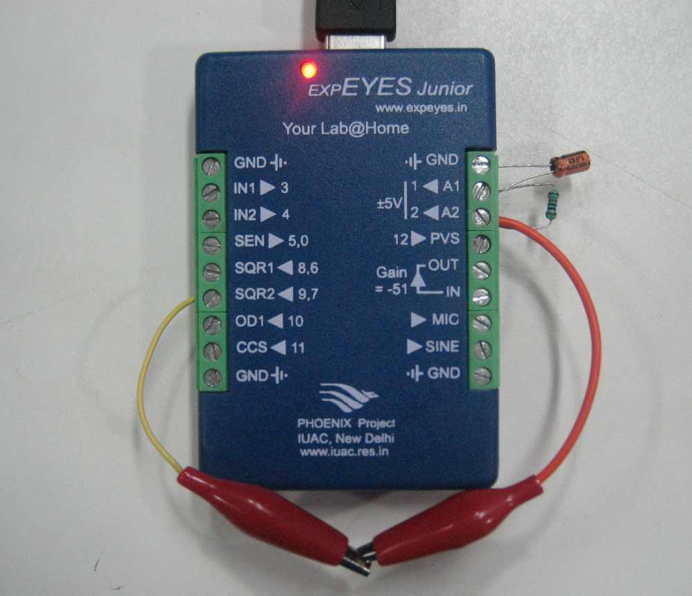
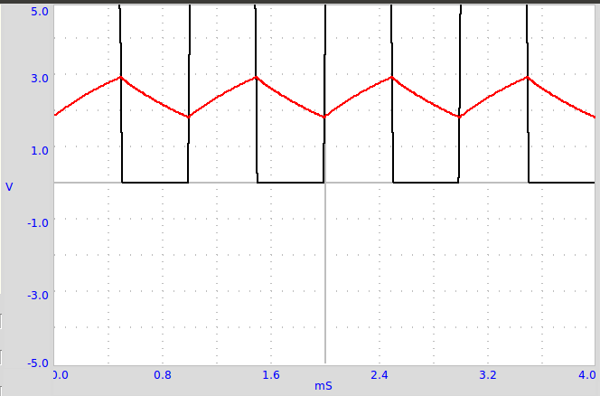
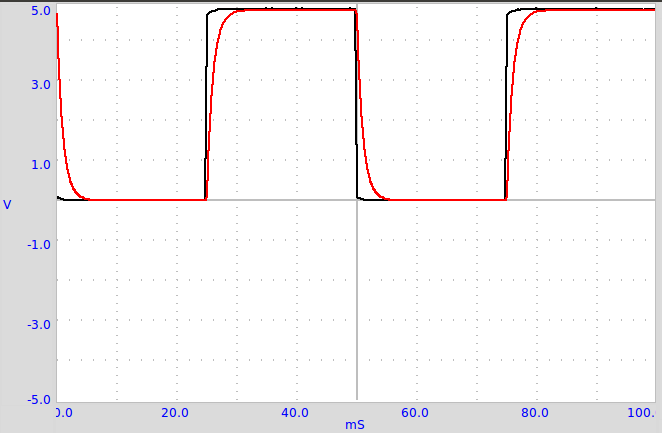
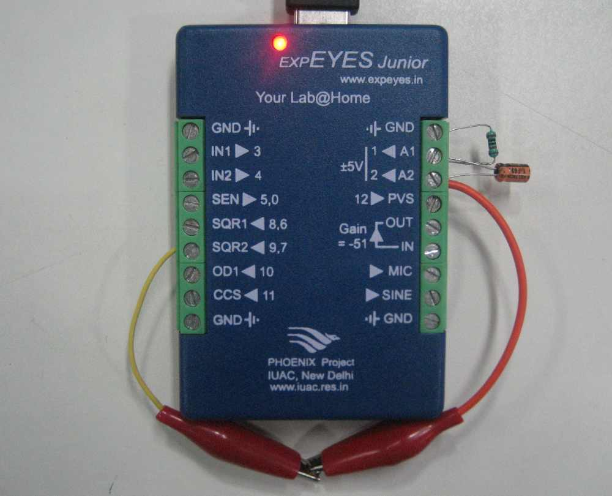
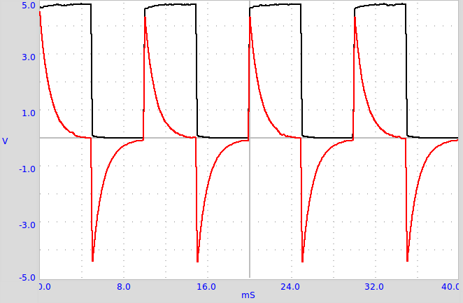

A square wave is applied to an RC circuit as shown in the figure below. The voltage across the capacitor is nearly triangular in shape. Integrating a square wave with time gives a triangular wave. The response depends on the Period of the applied wave and the RC time constant. In this case RC = 1.0e-6 x 1000 = 1 millisecond. The period of 1kHz wave is also the same.
  A 100 Hz squarewave is differentiated using the RC circuit shown below. In an ideal case the output should be a positive spike at every rising edge of the input and a negative spike every falling edge
 